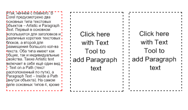

Подскажите как работают связи текстовых блоков
J-11 / 02.03.2012, 16:00/00:41
Форум:
Версия программы:
15.1.0.588 (sp1)
Подскажите как работают связи текстовых блоков, в иллюстраторе как-то всё проще, во вкладке текст, все операции с этим делом, а здесь? Как связать блоки, разорвать связь или удалить блок из группы? Я про корел X5. Подскажите кто знает. Заранее спасибо.
У фреймов есть специальный маркер внизу:

спасибо огромное.